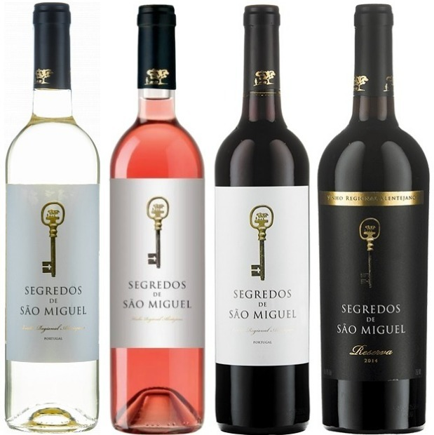

Виноделие Старого Света
Содержание
Португалия
Обозначения на бутылках
Colheita Seleccionada (Колейта Селессьонада) - вино из отборного урожая. Reserva, Grande Reserva, Reserva Especial (Резерва, Гранде Резерва, Резерва Эшпесьял) – особое качество по мнению винодела. Grande Escolha (Гранде Эшколья) – «особый», выдающийся урожай по мнению производителя. Vihnas Velhas (Виньяш Вельяш) – старые виноградники (лозы). Quinta (Кинта), Herdade (Эрдаде) – винодельческое хозяйство, вино только с собственных виноградников.
Регионы
Могут встречаться на этикетке название конкретного сорта, субрегиона или уровня качества (Escolha, Grande Escolha, Superior, Colheita Selectionada). Они имеют выше процент алкоголя (максимум — 14%). С 1999 года стали производить игристые традиционным методом (9 месяцев на осадке). Если используются сорта, не авторизованные для Виньо Верде, или не в том процентном соотношении, вина маркируются как Vinho Regional do Minho.
Loureiro (Лоурейро), Alvarinho (Альвариньо), Trajadura (Тражадура), Arinto (Аринту).
Другие сорта: Avesso (Авессу) - похож на Альвариньо, обычно используют для игристых. Azal (Азаль) - высокая кислотность, используют для игристых. Espadeiro (Эшпадейру) и
Padeiro (Падейру) - часто используются для изготовления розовых вин. Vinhao (Виньяо) - для красных.
Porto/Douro (Порто и Дору). Сорта: Touriga Nacional (Турига Насьональ), Touriga Franca (Турига Франка), Tinta Barocca (Тинта Барокка), Tinta Cao (Тинта Као), Tinta Francisca (Тинта Франциска). Белые: Viosinho (Виозинью), Goveio (Говейю), Rabigato (Рабигато)
DAO (Дао или Дан). 80% вина - красные. Красные сорта: Jaen (Жáэн)(Менсия), Alfrocheiro (Алфрушейру). Белые сорта: Encruzado (Энкрузадо)
Bairrada (Байррада). Красные сорта: Baga (Бага). из него делают практически все типы вин: красные и розовые тихие и игристые вина, крепленые вина, моносепажные и купажированные с другими сортами винограда. Белый: Maria Gomes (Мария Гомеш), Bical (Бикаль)
Tavora-Varosa (Тавора-Вароса). Специализируюется на игристых винах. используют как традиционные сорта винограда для производства игристых: Шардоне, Пино Нуар, так и местные.
Алентежу (Alentejo)
Австрия и Германия
Классификация
Wein(Deutscher Wein) столовое вино, которое обычно представляет собой простую смесь разного винограда. Landwein (Deutscher Landwein) местное вино, из определенной области. Может быть только сухим или полусухим, но не сладким. эквивалент французских Vin de Pays/IGP, но никогда не походило на него в действительности. Качество обычно среднее. Qualitatswein Bestimmter Anbaugebiete (QbA) Качественное вино из указанной области». Для этих вин разрешена шаптализация. Виноматериалы должны происходить из определенного (одного из 13) винодельческих регионов; смешивать материалы из разных регионов запрещено. В отличие от двух предыдущих категорий, обязательно проходит дегустационный контроль качества в соответствующих органах. Качественное Вино из Определенной Области — эквивалент французского АОС, хотя качество QbA доходит до качества АОС скорее по формальным признакам. Но вино QbA от хорошего винодела будет надежным приобретением. Указание Classic на этикетке – сухие сортовые вина. Prädikatswein Вино высокого качества. Для него применяется виноград высшей спелости. Шаптализация запрещена. Вино должно происходить из определенного региона, а его название должно быть указано на этикетке.Также обязательно проходит дегустационный контроль качества. Делится на шесть категорий: Kabinett— «кабинет». Вина самого легкого стиля. Spätlese— «шпэтлезе» (буквально «поздний сбор»). Изготавливается из винограда собранного через 12-14 дней после сбора ягод для Kabinett. Может быть и сухим. Auslese — «ауслезе» (буквально «отборное»). Вино, изготовляемое из вручную отобранного (то есть выбираются наиболее качественные и спелые) ягоды позднего сбора. Содержание сахара повышено, как правило, это сладкие вина — но необязательно. Beerenauslese (ВА) — «беренауслезе» (буквально «отборные ягоды»). Сладкие десертные вина, производятся из не просто спелого, но подвяленного, заизюмленного винограда. Ягоды при этом могут быть поражены «благородной плесенью». Применяется только ручной сбор урожая. Eiswein — «айсвайн» (буквально «ледяное вино»). Такое вино производится из ягод, собранных особенно поздно, после заморозков, и замёрзших естественным образом на лозе, и отжатых замороженными же. Сладость аналогична той, что характерна для беренауслезе — по сути, это те же ягоды, но подмороженные. Trockenbeerenauslese (ТВА) — «трокенберенауслезе» (буквально «сухие отборные ягоды»). Очень сладкие, насыщенные вина, изготавливаются из ягод, пораженных «благородной» плесенью. Не применяется механический сбор урожая. Это роскошные, долговечные вина. Обычно имеют невысокую крепость. Для изготовления одной такой бутылки вина требуется урожай с 6 — 8 виноградных лоз. Также в Германии выделяют ряд участков и виноградников, названия которых могут выноситься на этикетке. Существует понятие Grosslagen – так называют группу виноградников в рамках какой-либо административной единицы; Einzellagen – почти 300 определенных виноградников, входящих в Grosslagen по всей стране. Einzellagen – это, по сути, single vineyard, то есть конкретный, определенный виноградник с определенными характеристиками, внесенный в специальный реестр. Тем не менее, Einzellagen может быть разделен между несколькими собственниками. В обоих случаях на этикетке указывается название виноградника и деревни/коммуны Классификация VDP VDP – важная в Германии ассоциация, объединяющая конкретных производителей с безупречной репутацией, соответствующих ряду параметров. Ее символ — орел с гроздью винограда на груди — присутствует на бутылках. Хозяйства, входящие в нее, используют свою, дополнительную (и весьма интересную) систему классификации. Grosse Lage – аналог бургундского Гран Крю. Erste Lage – аналог бургундского Премьер Крю. Ortswein – вино с определенного (классифицированного) виноградника, аналог «вилляж» в Бургундии Gutswein – базовый уровень, аналог французскому «замковому» вину Для вин VDP уровня Grosse Lage, и, в некоторых случаях, Erste Lage, определяются сорта винограда. Так, для Мозеля это будет Рислинг, для Рейнгау — Рислинг и Шпетбургундер и т.д. Также можно встретить обозначение GROSSES GEWÄCHS (Гроссес Гевахс) — это также аналог «гран крю». В регионе Рейнгау существует дополнительная категория Erste Gewachs (Эрсте Гевах) — аналог премьер крю, лучшие участки.
Регионы
Mosel Saar Ruver (Мозель Саар Рувер). В основном Рислинги
Rheingau (Рейнгау). В основном Рислинг
Rheinhessen (Рейнхессен)
Сорта винограда — Мюллер-Тургау, Рислинг, Дорнфельдер, Сильванер и многие другие. Здесь производятся вина самых разных стилей.
Pfalz (Пфальц)
Сорта винограда самые разнообразные: Рислинг, Мюллер-Тургау, Дорнфельдер, Португизер, Мускат и даже Гевюрцтраминер (хотя его здесь немного, он считается специалитетом региона).
Wurttemberg (Вюртемберг)
Здесь много сорта Троллингер; однако здесь также превосходно удается Рислинг.
Baden (Баден)
Важнейший производитель красных вин в стране, самый южный. Здесь в основном произрастают сорта группы Пино — Шпетбургундер, Грауэрбургундер, Вайсбургундер. Также возделывается некоторое количество Рислинга и Гевюрцтраминера.
Franken (Франкония)
пециалитет этого региона — сорт Сильванер. Он дает здесь поистине превосходные результаты — полнотелые, минеральные вина с яркой индивидуальностью. Их нередко разливают в плоские, напоминающие фляги, бутылки под названием «Боксбойтель».
Австрия
Gruner Veltliner (Грюнер Вельтлинер)
Другие важные белые сорта: Рислинг, Вайсбургундер (Пино Блан), Мюллер-Тургау, Вельшрислинг, Шардоне (на юге Австрии, в Штирии, называется Морильон), Совиньон Блан.